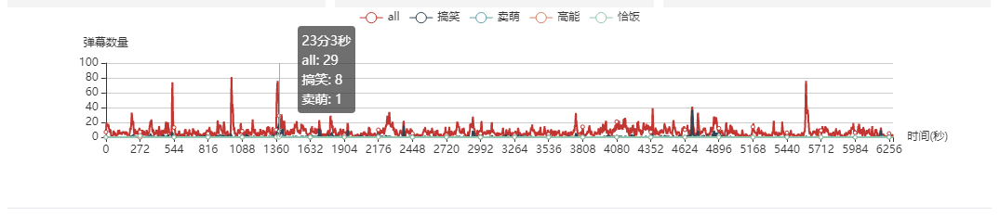
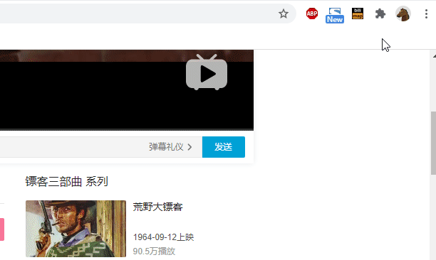
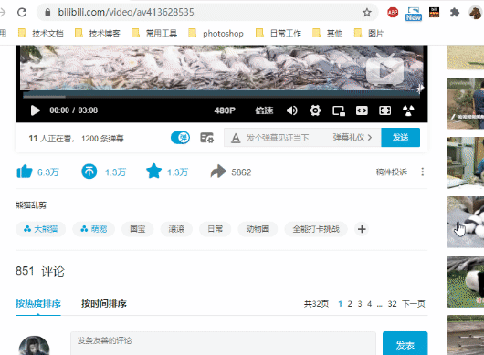
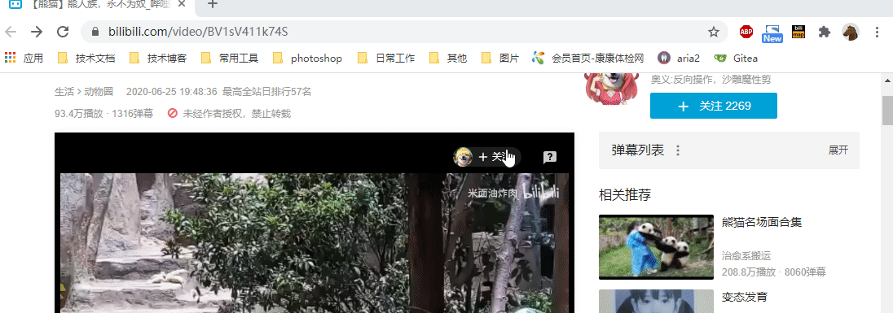
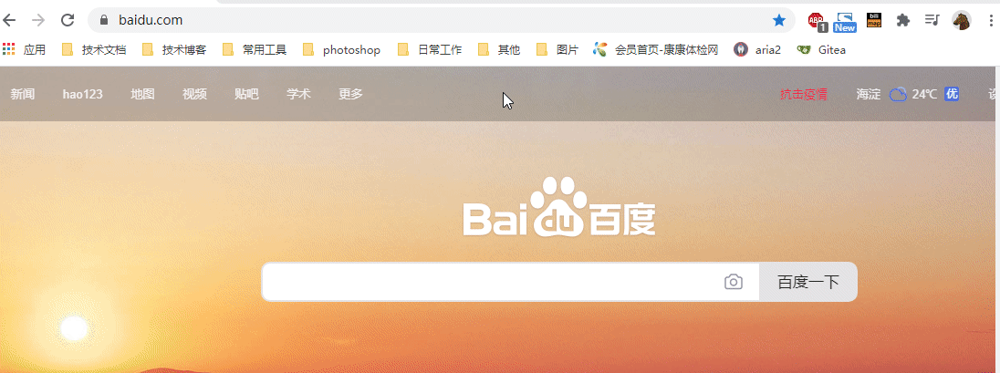

Bilimap文档
bilimap是一个浏览器插件，bilimap的主要功能是：利用B站（bilibili）良好的弹幕生态系统，在B站视频页面生成弹幕图表，展示符合特定规则的弹幕在某一时刻的数量。
一、说明
bilimap 作为一个浏览器插件，目前只在B站的普通视频、番剧、电影等视频页面有效，不支持直播页面的弹幕。
bilimap只与B站服务器存在网络交互，不会向任何B站和其他服务器上传用户的个人信息，用户的所有设置全部保存在本地浏览器端。
当您从浏览器删除bilimap时，浏览器将清空您对bilimap的所有设置，即使重新安装bilimap，之前的设置无法找回，您可以在卸载bilimap前导出您的设置。
由于每条弹幕大概会在页面停留6秒时间，并且同一弹幕可能多次匹配同一项规则，所以bilimap生成的图表只能粗略展示视频某时刻的同屏弹幕条数，并非视频实际的总弹幕数量。
注意：bilimap会修改B站视频页面的右键菜单，添加新的菜单项（功能入口），并且根据用户的操作，bilimap会修改B站页面的展示内容（添加图表），请明确知晓。
二、安装方式
chrome
您可以使用chrome浏览器访问bilimap的chrome商店页面点击“添加至chrome”直接安装(版本略低，有些新功能可能不支持)
或者下载github库到电脑，开启chrome浏览器的“开发者模式”后，点击“加载已解压的扩展程序”，加载版本库内的src目录(chrome官方不推荐)
firefox
推荐您使用firefox浏览器访问bilimap的add-ons产品页面, 点击“添加到firefox”直接安装(版本略低，有些新功能可能不支持)
三、功能介绍
主要功能. 弹幕图表
弹幕图表功能依赖用户设置的正则表达式。正则表达式是对字符串操作的一种逻辑公式，多用于过滤、检索、替换那些符合某个模式(规则)的文本，关于正则表达式的更多详细信息请参考学习正则表达式。
-
1.添加弹幕规则
1). 点击浏览器地址栏右侧的bilimap的图标，会弹出一个展示页面
2). 页面上存在两个输入框，按输入框提示的信息输入您设定的规则名和正则表达式。
3). 按下回车后，页面将新增一条记录，同时bilimap会将数据保存到浏览器。
-
2.查看和修改弹幕规则
1). 点击浏览器地址栏右侧的bilimap的图标，弹出展示页面。
2). 点击已存在的任何规则的规则名，相应的信息会展示在页面下方的输入框。
3). 您可以对输入框的内容进行修改后再次按下回车提交，原规则将会被覆盖。
4). 如果您变更了规则的名称，bilimap将认为您新增了一条规则，您可以手动删除原有的规则。
-
3.导入导出弹幕规则

*注意！由于firefox57版本之后官方已取消插件对blob对象的支持，所以目前导入导出弹幕规则的功能无法在firefox使用。
1). 点击浏览器地址栏右侧的bilimap的图标，弹出展示页面。
2). 点击标题“弹幕规则”，页面下方将滑出“导入”“导出”按钮，点击其中的“导入”按钮。
此时您可以：
①. 点击其中的“导入”按钮。
②. 在弹出文件资源管理器选择要导入的文件并点击“确认”或“打开”。
③. 文件中包含的弹幕规则将展示到弹出框中。
或者：
①. 点击其中的“导出”按钮
②. 浏览器将生成一个dmreg格式的文本文件并自动下载
③. 文件可使用记事本打开，内容格式如下:
高能: (高能|核能|预警|经费|预算|特效|炸裂)
卖萌: (23+|awsl|高萌|卖萌|我死了|阿伟|医疗兵|血包)
搞笑: (23+|hh+|xswl|哈哈+|万恶之源|场面|不愧是|红红火)
恰饭: (恰饭|硬广|广告|猝不及防)
您可以将以上文本以utf8格式保存为".txt"或".dmreg"文件后进行导入。
-
4.生成弹幕图表

1). 确认bilimap的规则展示页面上存在已勾选的规则
2). 从B站视频页面点击鼠标右键，调出右键菜单
3). 点击“bilimap”菜单项的子菜单项“展示弹幕地图”
4). 当前页面的视频播放器下方会出现弹幕图表
5). 在图表中移动鼠标，可以看到对应横坐标时间点上各类弹幕的条。
6). 在图表上点击鼠标时，当前页面视频会自动跳到对应横坐标时间点上的进度继续播放。
附加功能一. 获取B站视频封面
1. 从B站视频页面点击鼠标右键，调出右键菜单
2. 点击“bilimap”菜单项的子菜单项“获取封面图片”
3. 浏览器将自动下载视频封面图片。
附加功能二. 获取B站部分视频AV号
1. 从B站视频页面点击鼠标右键，调出右键菜单
2. 点击“bilimap”菜单项的子菜单项“地址栏展示av号码链接”
3. 浏览器将自动把地址栏中的链接转换成av号码格式。

附加功能三. 跳转到bilibili
1. 在浏览器地址栏输入bav后按下tab键
2. 输入B站av号（一串纯数字)
3. 选择地址栏展示出的视频地址，按回车访问

附加功能四. 即时鬼畜
当观看B站视频或电影、番剧时，可以使用快捷键ctrl+shift+alt+z使B站播放器强制循环某片段，本功能不支持直播视频。
1.在需要开始鬼畜循环的位置按下ctrl+shift+alt+z记录起始位置。
2.在需要结束鬼畜循环的位置再次按下ctrl+shift+alt+z记录结束位置，此时播放器将跳回起始位置开始播放，当进度条达到结束位置时播放器将重新跳回起始位置。
3.使用快捷键ctrl+shift+alt+x取消鬼畜设置，再次按下ctrl+shift+alt+z将重新记录鬼畜起始位置。

四、其它
bilimap的主要开发环境是chrome和firefox，其它任何浏览器均未测试。
bilimap的图标由logoly生成，弹幕数据图表使用echarts生成，在bilimap中集成了删减版的echarts.min.js。
本文档的动图使用screentogif录制生成。